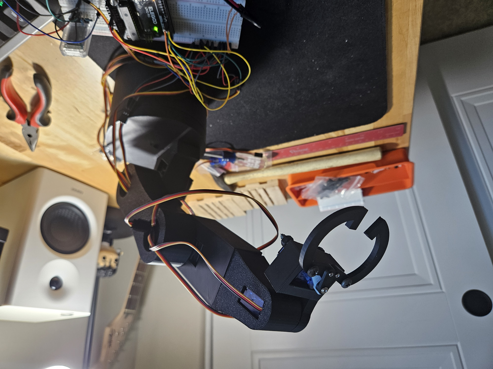
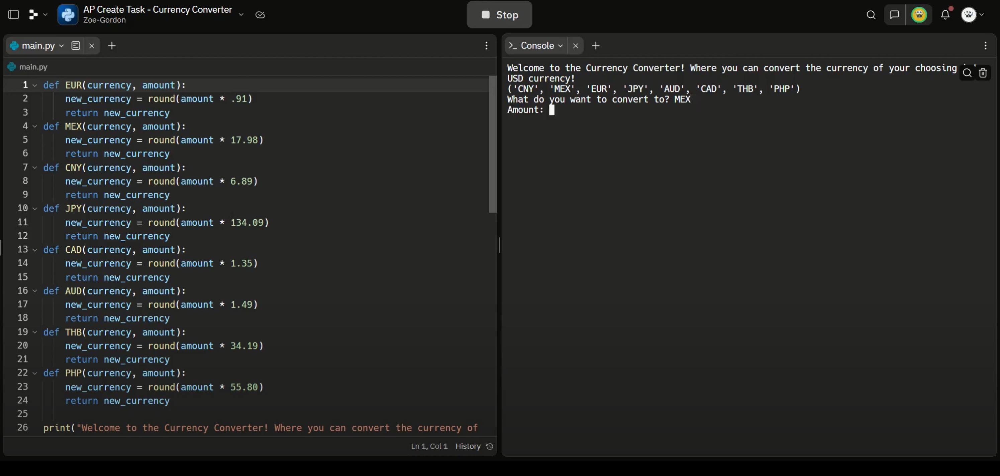
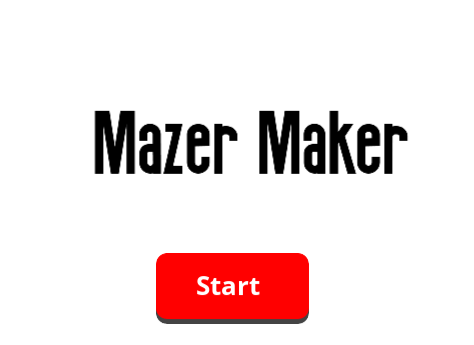
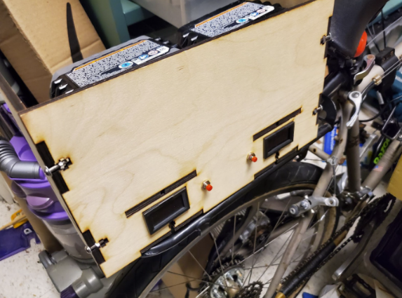
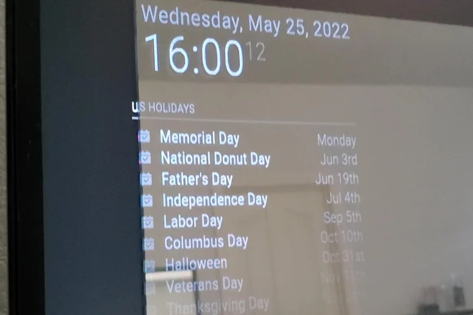
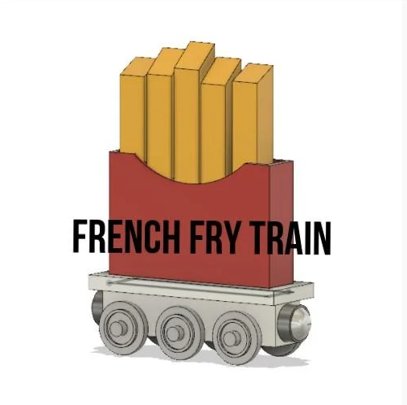
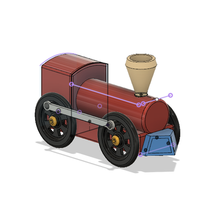
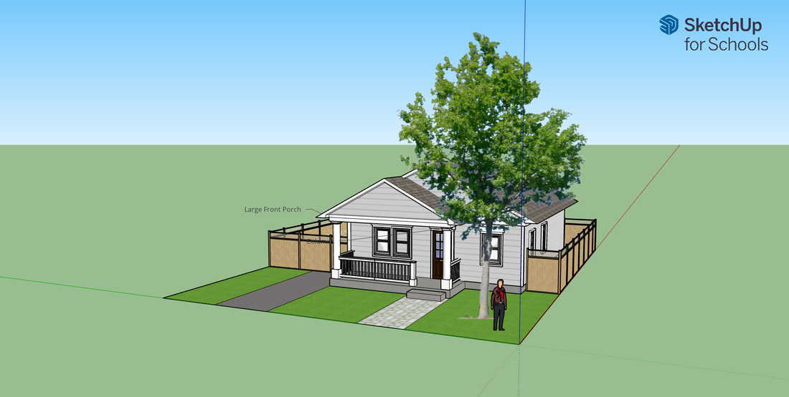

For this project, in Solidworks I collaborated on the designed of a fruit remover that maximizes efficenty and functionally. The design includes various components that were designed to fit real world applications for harvesting fruit. This design minimizes the damange that is done to the tree, through this project I was able to perfect my CAD skills and incorporate mechanical design.

Hi, my name is Hope. I designed a robotic arm that you can control with a computer program. This arm is designed with an Elegoo UNO R3 or Arduino Uno and some servo motors. This project is perfect for beginners and for anyone wanting to learn about robotics, electronics, and 3d modeling.
For my computer science class we had to do a topic that was related to the course. I choose to do a HTML and CSS Course. This course was very detailed and enjoyable. For my final project I created a website for a local artist.

For our Final AP project we were tasked to create a program that checks all the boxs of the AP. My our decided to create a currency converter. This converter takes currency from other countries like Japan, China, and so many more. And converts this into US currency.

This game was made inspired by a project titled the same way. The object of the game is to draw a maze. Then after drawing be able to go make your way to the end. The catch is you are not able to go over walls. The only way is to go around them. Click the link above to play!

Instructable of E-Mobility Bike
We were tasked to build an E-mobility bike. This bike would be an inexpensive and sustainable option. For instance being able to bike to and from school, work, or any other endeavor. In this instructable we explain our process from attaching the motor, to building housing for the system and adding extra functions.
Bike Compontent Box Fusion Model
For our E-mobility Bike we had to create a box to store all the components for the bike. This box has to be stable and easily dismandtable this is because if there is an error you will be able to unscrew and fix the wiring.
My app is to educate children about the different species that live in the forest. While also teaching them about the harm of trash in the environment. In this video, you can see a start screen prompting the user to click play. Once you are in the play menu telling you about the biome, which is a forest, saying that not everything in the forest is meant to be touched. After creation is clicked, you are brought into the main game. There are various plants and objects scattered around the map. On the top left of the game there is a menu that displays the different objects that are able to be clicked on the map. The value of these objects are set to zero. When you click on one of these items the variable that is set in the menu is increased by one. The input is when the item is clicked, and the output is that variable that was displayed before increased by 1.

Raspberry Pi Smart Mirror Build
This project came to light after discovering the very useful things that smart home devices can have on one’s own home. I wanted to use this mirror to try out different ideas and test it out in my smart home ecosystem already in my own home.

I am a high school student at Benicia High School, for my design I made a children's toy train in the shape of French fries. This project was part of my engineering class, I used Fusion 360 to model the design and a 3D printer to print out the prototype and finished build. his project was for my engineering class and our task was to create a toy train that's also compatible with Thomas the Train toys and their track. Each group had to come up with their own theme for their trains and scale it to the correct scale as the Thomas the Train trains.

During this project we had to create a model toy train in Fusion 360. Then once we created each part we had to connect each of the pieces together and assemble the train. Through all this I learned how to use some of the important tools in Fusion 360 and how they will manipulate each of the piece.

Here is a detail screenshot of the floorplan of the house it has the dimensions of 990.67sqft. The limit of the square footage house has to be below 1000sqft, which this house is just under the limit. The floorplan shows the different rooms and the square footage of each room. This house also has the addition of a front porch.In this project I had to take the floorplan we made in Homestyler and turn it into an actual house. Finding a style that fit the floorplan. I did this design process in Sketchup.